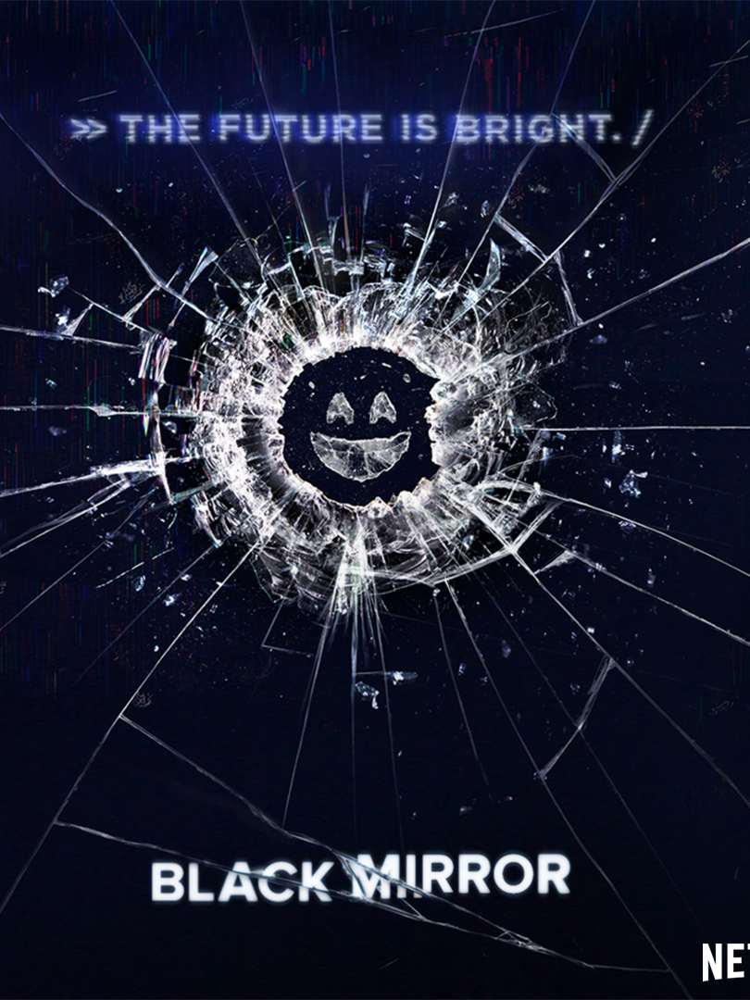

Tenho 19 anos, e moro em São Caetano do Sul desde os meus 8 anos.
Escolhi o curso de ciência da computação porque é algo que sempre me apeteceu, desde a infância.
Em 2020 entrei em Engenharia de Materiais pela USFCAR, mas no 4° semestre percebi que nâo era a carreira que eu queria seguir, então saí do curso
Hoje sou aluno da FEI
Sempre gostei de games, e hoje o tipo de conteúdo que mais consumo sâo as streams; o streamer que eu mais acompanho é o Gaules
MÚSICA
(ÁLBUNS FAVORITOS)
FILMES/SÉRIES
(E ONDE ASSISTIR)
Gosto muito de viajar, e esses são países que tenho o sonho de conhecer:
Clique AQUI para acompanhar o meu progresso na disciplina